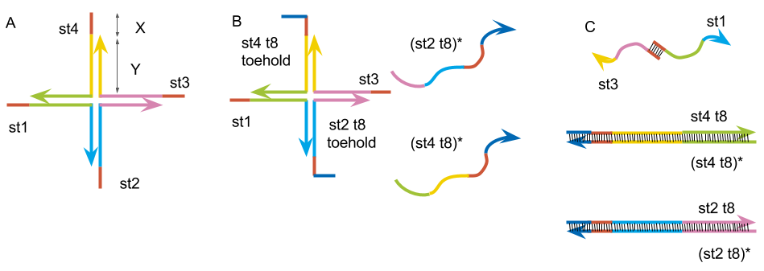
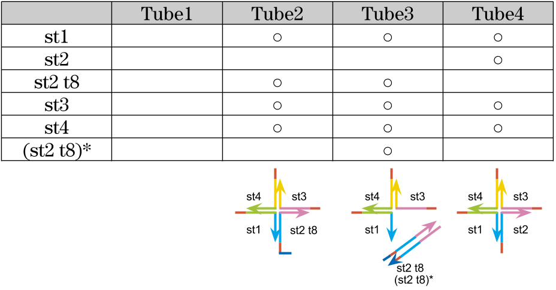
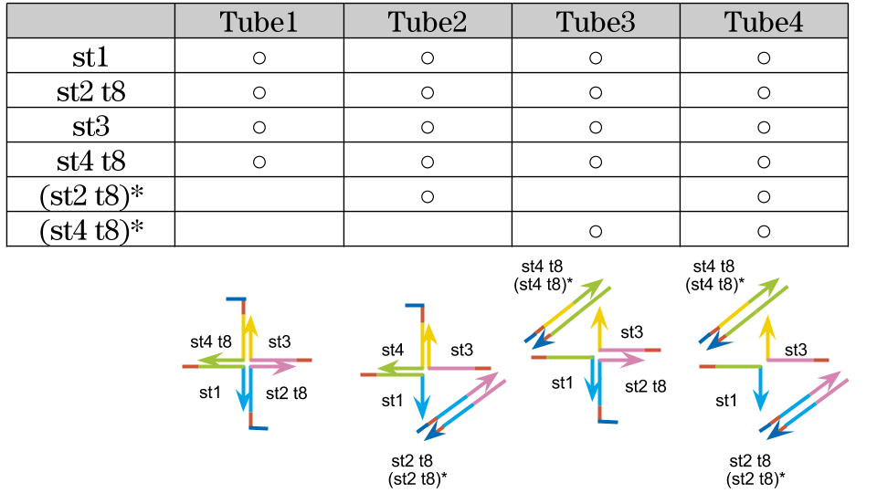

Protocol
Design of the DNA hydrogel

st1: 5’- TGGATCCAGTTTGTTATCGCAGGAGCGTCGGTATTCAAA -3’
st2: 5’- TGGATCCAGTTTGAATACCGACGCCACGACCTAATCTTA -3’
st3: 5’- TGGATCCAGTAAGATTAGGTCGTGATGGTGAAATGTAAA -3’
st4: 5’- TGGATCCAGTTTACATTTCACCATTCCTGCGATAACAAA -3’
st2 t8: 5’- CACTCTTCTGGATCCAGTTTGAATACCGACGCCACGACCTAATCTTA -3’
(st2 t8)*: 5’- TAAGATTAGGTCGTGGCGTCGGTATTCAAACTGGATCCAGAAGAGTG -3’
st4 t8: 5’- CACTCTTCTGAATCCAGTTTACATTTCACCATTCCTGCGATAACAAA -3’
(st4 t8)*: 5’- TTTGTTATCGCAGGAATGGTGAAATGTAAACTGGATCCAGAAGAGTG -3’
Fig.3:(A) Basic DNA hydrogel motif. (B) The motif made by st1, st2 t8, st3, st4 t8 and complimentary strand to st2 t8, st4 t8. (C) The structure after annealed together.
1, Experiment to see the gel is formed
We checked that gel is formed by following the same protocol as reference experiment.
Mix
| control | gel | |
|---|---|---|
| TE(pH 8.0)* | 1x | 1x |
| NaCl | 50 mM | 50 mM |
| DNA strands | 0 μM | 200 μM |
PCR
The Condition of Annealing in experiment 1 is shown in fig.4

Fig.4: Annealing condition. DNA strands are annealed by cooling from 95 to 4°C in 1.5 h.
2, Experiment to find the optimal DNA concentration
We decided the optimal concentration of the DNA strands.
Mix
| Tube1 | Tube2 | Tube3 | Tube4 | |
|---|---|---|---|---|
| TE(pH 8.0) | 1x | 1x | 1x | 1x |
| NaCl | 50 mM | 50 mM | 50 mM | 50 mM |
| DNA strands | 0 μM | 50 μM | 75 μM | 100 μM |
PCR
Annealing condition was the same as experiment 1 (shown in fig.4).
3,Experiments to check the state of gel by changing combination of sequences
We tested how the gel state varies with a combination of DNA sequences.

Mix
| Solution | Final concentration |
|---|---|
| TE(pH 8.0) | 1x |
| DNA strands | 100 μM |
| NaCl | 50 mM |
Annealing condition
After mixing solutions, PCR was sat in the condition shown in Fig.5.

Fig.5: Annealing condition in experimant 3. After denaturation at 95°C for 10 min, the temperature was reduced to 25°C at intervals of 1°C per 14 seconds.
4, Experiments to check the state of gel by adding complementary strand of st2 t8 and st4 t8
4-1, only st2 t8
We tried to create the motif by replacing st2 and st4 to st2 t8 and st4 t8 which we designed, and checked the gel state are changed or not with adding (st2 t8)* and (st4 t8)* which strands are complementarily binding to st2 t8 and st4 t8. First, we tried with swapping st2 to st2 t8 and added (st2 t8)*.
Fig.6: (A)The motif made by st1, st2 t8, st3, st4 t8. (B)The image of the expected structure after PCR.

Mix
| Solution | Final concentration |
|---|---|
| TE(pH 8.0) | 1x |
| DNA strands | 100 μM |
| Complementary strand | 200 μM |
| NaCl | 50 mM |
Annealing condition
The setting of PCR was the same as experiment 3 (shown in fig.5).
4-2, st2 t8 and st4 t8
After that, we confirmed that the gel was formed or not with adding (st4 t8)* complementary to st4 t8 which in the new motif.

Fig.7: (A)The motif build by st1, st2 t8, st3, st4 t8. (B)The image of the expected structure after PCR.

Mix
| Solution | Final concentration |
|---|---|
| TE(pH 8.0) | 1x |
| DNA strands | 100 μM |
| Complementary strand | 200 μM |
Annealing condition
The protocol of PCR was the same as experiment 3 (shown in fig.5).
Material
TE(pH 8.0) (Ambion,US)
10 mM Tris pH8.0
1 mM EPTA pH8.0
0.2 μm filtered
DNA strands (Integrated DNA Technologies, US)
Equipment
Rotor Gene™ Q Real-Time Rotary Analyzer (QIAGEN, Germany)
T319-4N 0.1 ml Tube and Cap Strips for Qiagen Rotor-Gene™ Q Real-Time Rotary Analyzer (QIAGEN, Germany)
reference
[1] Kandatsu, D. et al. “Reversible Gel-Sol Transition of a Photo-Responsive DNA Gel.” Chem Bio Chem 17, 2016, 1118-1121